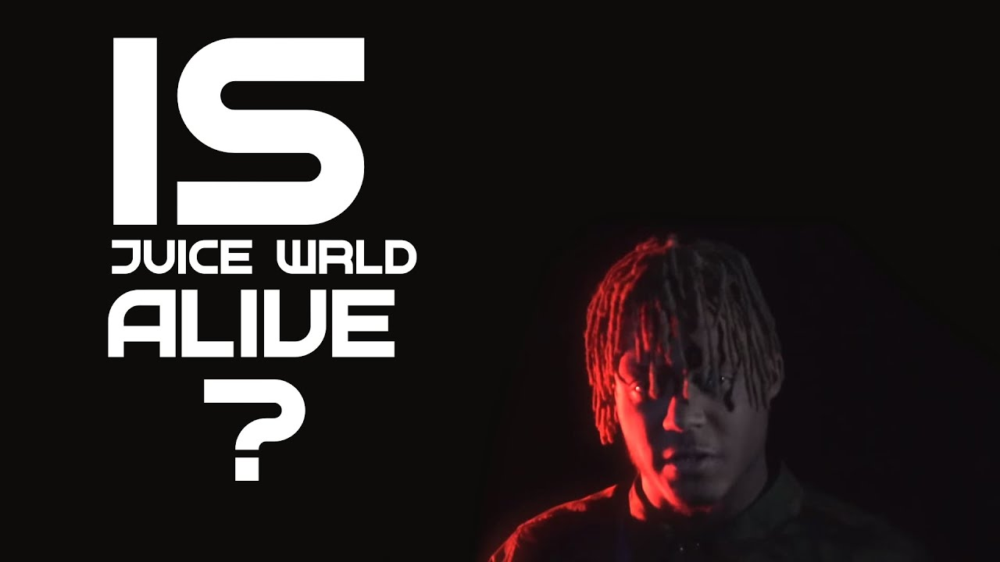

Since the tragic passing of rapper Juice WRLD in December 2019, a surprising number of conspiracy theories have emerged suggesting that the artist is still alive. Fans and theorists have scrutinized every detail of his death and subsequent events, leading to a range of speculative claims that Juice WRLD faked his own death.
One of the most discussed theories is that Juice WRLD's death was staged to escape the pressures of fame or to start a new life in secrecy. Proponents of this theory argue that inconsistencies in the official reports and unusual details surrounding his death hint at a larger cover-up. They point to various social media posts, supposed "clues" in his music, and alleged sightings of the artist as evidence that he is still alive.
For example, some fans claim that a series of cryptic messages and imagery in Juice WRLD’s music videos and social media posts contain hidden clues about his survival. There are also reports of sightings that supporters believe are of Juice WRLD in different locations across the globe, though these claims are often unverified.
The official statements from Juice WRLD’s family and management have consistently confirmed his death, emphasizing the tragic nature of his passing. Despite this, the conspiracy theories have gained traction among certain segments of his fanbase, who find it difficult to accept the loss of their idol.
Public reactions to these theories vary widely. While some people dismiss the claims as baseless and a form of denial, others remain convinced by the supposed evidence and continue to spread these theories online. The ongoing debate has fueled discussions on social media platforms and conspiracy forums, keeping the topic alive.
Regardless of the validity of these theories, the impact on Juice WRLD's fans has been significant. The idea that he might still be alive has provided some solace to his grieving fans, offering them hope amidst their sorrow. On the other hand, it has also contributed to misinformation and confusion about his actual fate.
In the music industry, Juice WRLD's death has been a reminder of the pressures faced by artists and the importance of mental health awareness. His passing has sparked discussions about the need for better support systems for musicians dealing with the pressures of fame and personal struggles.
As the debate over Juice WRLD’s fate continues, it’s clear that the intrigue surrounding his death will persist for some time. Whether one views the theories as a form of hope or as a misguided attempt to cope with loss, they highlight the profound impact that Juice WRLD had on his fans and the enduring nature of his legacy.
While the official narrative remains that Juice WRLD has passed away, the conspiracy theories reflect a broader cultural phenomenon where the lines between reality and speculation often blur, especially in the age of social media.
